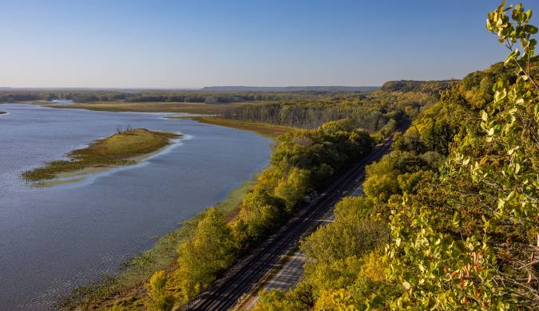
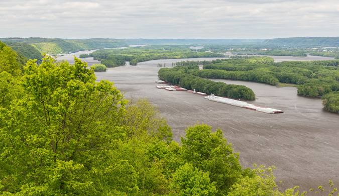
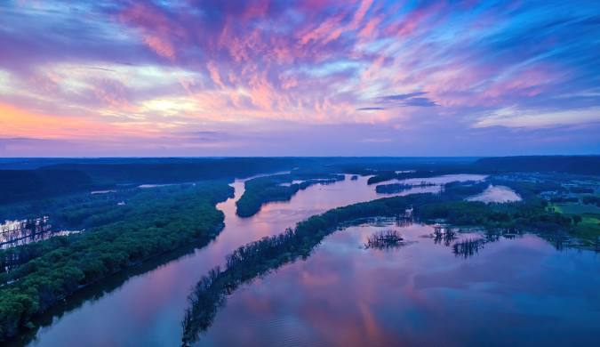

Length: The Mississippi River stretches approximately 2,340 miles, making it the second-longest river in North America, just slightly shorter than the Missouri River when combined with its tributaries.
Source and Mouth: It begins at Lake Itasca in northern Minnesota, meandering southward before emptying into the Gulf of Mexico near New Orleans, Louisiana.
Watershed: The river has a vast watershed that encompasses parts of 32 U.S. states and two Canadian provinces, draining an area of about 1.2 million square miles. This watershed includes numerous tributaries that contribute to its flow.
Major Tributaries
Significant tributaries of the Mississippi River include:
Missouri River: The longest tributary, contributing significantly to the flow.
Ohio River: A major river that drains parts of the northeastern U.S. and is critical for transportation.
Arkansas River: Flows through the central United States and adds to the river’s volume.
Red River: A significant contributor from the southwestern U.S.
Historical Significance

Indigenous Cultures: Long before European exploration, the Mississippi River was a crucial resource for Native American tribes. It provided food, transportation, and trade routes. Tribes such as the Dakota, Ojibwe, and many others thrived along its banks.
European Exploration and Settlement: The river became a focal point for exploration in the 17th century. French explorer Jacques Marquette and Louis Jolliet were among the first Europeans to navigate it in 1673. The river facilitated the movement of settlers and traders, shaping the early economy and culture of the region.
Civil War Era: During the American Civil War, control of the Mississippi River was critical. The Union aimed to gain control to split the Confederacy and secure vital supply routes. Key battles, such as the Siege of Vicksburg, were fought along its banks.
Economic Importance
Trade and Transportation: The Mississippi River serves as a major shipping artery for goods. It enables the transport of millions of tons of cargo annually, including agricultural products like corn and soybeans, as well as coal, petroleum, and manufactured goods.
Agricultural Hub: The fertile floodplains of the Mississippi Valley are some of the most productive agricultural land in the United States. The river’s regular flooding historically deposited nutrient-rich silt, making the surrounding areas ideal for farming.
Ports and Industry: Major cities along the river, such as St. Louis, Memphis, and New Orleans, have developed robust port facilities that enhance trade. These cities benefit economically from their strategic locations along the river, driving local industries and services.
Environmental Aspects

Biodiversity: The Mississippi River and its surrounding ecosystems support a rich diversity of wildlife, including fish species like catfish and sturgeon, as well as migratory birds that rely on the river as a habitat and stopover point during migration.
Wetlands and Habitats: The river’s delta region is home to extensive wetlands that provide critical habitats for many species. These areas help filter pollutants, protect against flooding, and serve as nurseries for aquatic life.
Challenges: The river faces several environmental challenges, including pollution from agricultural runoff, industrial discharges, and urban waste. Additionally, climate change poses risks through altered rainfall patterns, rising temperatures, and increased flooding.
Cultural Impact
Literature and Arts: The Mississippi River has inspired countless works of literature, art, and music. Mark Twain’s novels, such as Adventures of Huckleberry Finn, vividly depict life along the river, exploring themes of adventure, freedom, and the complexities of American society.
Folklore and Music: The river is often celebrated in American folklore and music, particularly in genres like blues and jazz, which have deep roots in the river towns and reflect the cultural heritage of the region.

Recreation and Tourism: The river is a hub for recreational activities, including fishing, boating, and riverboat cruises. It attracts millions of tourists each year, contributing to the local economy and fostering a deeper appreciation for the natural environment.
Conclusion
The Mississippi River is more than just a geographical feature; it is a vital artery that has shaped the history, economy, and culture of the United States. From its historical significance as a trade route and strategic military asset to its current role in commerce and recreation, the river continues to be a cornerstone of American life. As we face ongoing environmental challenges, it is essential to prioritize the protection and restoration of this iconic waterway, ensuring its health and vitality for future generations.
 Mississippi River: A Comprehensive Overview
Mississippi River: A Comprehensive Overview